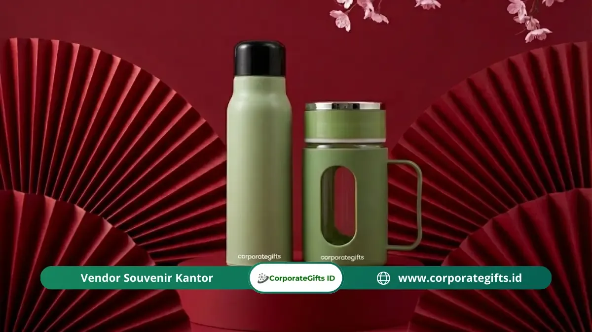

Corporate Gifts ID - Etika memberikan hadiah Imlek adalah seperangkat aturan tradisi Tionghoa tentang pemilihan barang, tata warna, numerologi angka, dan gestur penyerahan bingkisan agar menghadirkan keberuntungan (hoki) dan penghormatan tulus. Terapkan kemasan bernuansa merah atau emas, tentukan jumlah genap (hindari mutlak angka 4), serahkan menggunakan kedua belah tangan, dan hindari pantangan tabu seperti jam dinding, benda berbilah tajam, sepatu, sapu tangan, buah pir, maupun cermin.
Salah dalam mengurasi bingkisan dapat memicu rasa canggung yang mendalam, mengingat dalam kebudayaan Tionghoa cinderamata bertindak sebagai bahasa simbolis yang sarat pesan spiritual. Warna kertas pembungkus atau kuantitas barang yang keliru dapat ditafsirkan sebagai doa buruk, bahkan berisiko mencederai hubungan kemitraan bisnis yang telah dibina bertahun-tahun. Panduan komprehensif ini merangkum esensi tradisi, aturan estetika visual, daftar barang pantangan, tata krama prosesi, hingga kiat pengadaan profesional di ranah korporat.
Ringkasan Etika Hadiah Imlek dalam 6 Poin:
- Warna Keberuntungan: Utamakan dominasi merah dan emas; hindari pembungkus putih atau hitam polos yang berkonotasi duka.
- Numerologi Jumlah: Pilih kuantitas genap, favoritkan kelipatan angka 8 (kemakmuran), dan jauhi angka 4 (kematian).
- Daftar Pantangan Tabu: Jam dinding, gunting/pisau tajam, sepatu, sapu tangan duka, buah pir, dan cermin kaca.
- Tata Krama Penyerahan: Selalu gunakan kedua belah tangan dan dahulukan sosok yang paling dituakan atau berposisi tertinggi.
- Etiket Pembukaan Kado: Jangan membuka kemasan kado langsung di hadapan pemberi kecuali dipersilakan secara eksplisit.
- Pemberian Uang Tunai: Wajib dikemas dalam amplop merah resmi (angpao/hongbao), tidak diserahkan polos begitu saja.
Apa Makna di Balik Tradisi Memberikan Hadiah Imlek?
Sebelum memilih ragam item cinderamata, sangat esensial untuk mendalami filosofi dasar pemberian suvenir Imlek itu sendiri. Dalam kosmologi Tionghoa, sebuah bingkisan merupakan manifestasi doa, harapan keselamatan, dan proyeksi kelimpahan rezeki dari pemberi kepada penerima untuk menyambut lembaran tahun yang baru.
- Simbol Keharmonisan Sosial (Guanxi): Bingkisan berfungsi sebagai perajut keharmonisan relasi, mempererat ikatan kekeluargaan serta kemitraan bisnis agar senantiasa berjalan mulus dan saling mendukung.
- Pertukaran Energi Positif (Hoki): Menyerahkan kado bermakna baik dipandang sebagai upaya membagikan aliran berkah. Pelanggaran etika dikhawatirkan dapat menyumbat aliran rezeki kedua belah pihak.
- Bentuk Penghormatan Luhur (Li): Merupakan cerminan nilai kesantunan Konfusianisme, di mana pihak yang lebih muda atau posisi subordinat mengekspresikan rasa bakti dan hormat kepada senior melalui gestur persembahan yang pantas.
Aturan Warna dan Angka dalam Hadiah Imlek
Estetika visual kemasan dan perhitungan numerologi memegang peranan krusial dalam menentukan apakah hadiah disambut hangat atau justru menimbulkan ketidaknyamanan. Berikut pakem baku yang wajib dipedomani:
- Dominasi Warna Merah (Hong): Merah melambangkan unsur api, energi vital, antusiasme, serta penangkal aura kesialan. Pastikan pita hias, kotak kado, maupun tas jinjing didominasi warna merah terang.
- Aksen Emas Mengilap: Merefleksikan kemakmuran finansial dan status terhormat. Paduan merah dan emas merupakan standar emas yang paling aman dan anggun.
- Hindari Putih dan Hitam Monokrom: Jangan menggunakan pembungkus berbahan putih atau hitam polos tanpa aksen lain, karena kedua warna ini sangat erat dengan upacara perkabungan dan rasa duka.
- Pilih Kuantitas Angka Genap: Susun isi bingkisan dalam jumlah genap (misal 2, 6, atau 8 buah). Angka ganjil secara historis dikaitkan dengan kesendirian dan santunan duka cita.
- Pantangan Mutlak Angka Empat (Si): Meskipun berkarakter genap, pelafalan angka 4 dalam bahasa Mandarin berbunyi serupa dengan kata "mati". Memberikan 4 botol minuman atau paket berisi 4 produk adalah kekeliruan fatal.
- Angka Delapan yang Penuh Berkah (Ba): Bila memungkinkan, alokasikan jumlah item atau nominal uang berkelipatan angka delapan, karena fonetiknya menyerupai kata fa yang bermakna kejayaan rezeki.

Paket hampers Imlek eksklusif berornamen merah emas berisi set cangkir keramik, teh artisan premium, dan kartu ucapan personal.
Barang Apa yang Pantang Diberikan saat Imlek?
Meskipun tampak elegan atau berharga mahal, beberapa barang memiliki makna homofon negatif dalam dialek Tionghoa yang wajib dihindari agar tidak dianggap mendoakan kemalangan:
- Jam Dinding atau Jam Meja: Frasa "menghadiahkan jam" (song zhong) berbunyi identik dengan "menghadiri prosesi pemakaman". Tindakan ini menyiratkan bahwa usia atau masa hidup penerima sedang dihitung mundur.
- Benda Tajam (Pisau, Gunting, Letter Opener): Mengirimkan perkakas berbilah tajam ditafsirkan sebagai niat untuk memotong tali persahabatan atau memutuskan kontrak kerja sama kemitraan.
- Sepatu (Xie): Dalam dialek tertentu berbunyi menyerupai desahan kesialan (xie). Selain itu, memberi alas kaki diartikan memberi fasilitas bagi penerima untuk "berjalan menjauh" dari kehidupan Anda.
- Sapu Tangan Kain: Benda ini identik dengan alat menyeka air mata kesedihan pada masa duka, sehingga dianggap sebagai simbol salam perpisahan abadi.
- Buah Pir (Li): Membagi buah pir (fen li) terdengar sama persis dengan kata "berpisah". Bila ingin menghadiahkan buah-buahan segar, jeruk mandarin adalah pilihan terbaik.
- Cermin Kaca: Sifatnya yang mudah pecah melambangkan hubungan yang rapuh dan mudah retak, di samping mitos tradisional terkait penarik energi negatif.
| Kategori Bingkisan | Rekomendasi (Membawa Hoki) | Pantangan (Tabu Dihindari) | Makna Filosofis Tradisi |
|---|---|---|---|
| Buah & Makanan Segar | Jeruk Mandarin (berpasangan), Apel Merah | Buah Pir (Fen Li) | Jeruk melambangkan emas batangan; pir bermakna perpisahan |
| Kuliner & Tradisi Manis | Kue Keranjang (Nian Gao), Lapis Legit, Kue Kering | Makanan berasa pahit atau hambar | Nian Gao menyimbolkan peningkatan kemakmuran dari tahun ke tahun |
| Minuman & Lifestyle | Set Teh Oolong/Pu-erh Artisan, Cangkir Keramik | Cermin kaca rias, jam dinding | Teh mencerminkan ketenangan hidup; jam diidentikkan dengan kematian |
| Perlengkapan Eksekutif | Tumbler Stainless Gold/Red, Buku Agenda Kulit | Gunting, pisau lipat, sepatu kerja | Benda tajam memutus relasi; sepatu mengisyaratkan melangkah pergi |
Hadiah Apa yang Aman dan Cocok untuk Imlek?
Sebagai opsi pengganti barang-barang tabu, berikut kurasi isi suvenir yang senantiasa dinilai sopan, relevan, dan membawa kegembiraan:
- Jeruk Mandarin Segar: Simbol kemakmuran emas yang wajib disertakan dalam jumlah genap (misal 6, 8, atau 12 butir).
- Kue Keranjang Tradisional (Nian Gao): Simbol kenaikan pangkat dan peningkatan taraf hidup yang manis sepanjang tahun.
- Koleksi Teh Premium (Chinese Tea Set): Sangat netral, berkelas, dan digemari oleh mitra bisnis lintas generasi.
- Kue Kering dan Sarang Burung Walet: Menyiratkan kepedulian terhadap kesehatan dan kehangatan silaturahmi.
- Barang Fungsional Custom Berkelanjutan: Hampers custom berisi tumbler berinsulasi panas atau perlengkapan rumah tangga berdesain modern berpalet merah emas.
Bagaimana Tata Cara Menyerahkan Hadiah Imlek yang Sopan?
Bukan hanya wujud barangnya, etiket tubuh saat prosesi penyerahan merefleksikan kedalaman penghormatan Anda:
- Gunakan Kedua Belah Tangan: Ulurkan bingkisan dengan dua tangan sembari sedikit menundukkan kepala. Memberi hanya dengan satu tangan terkesan acuh tak acuh dan kurang sopan.
- Dahulukan Sosok Tertua atau Jabatan Tertinggi: Dalam forum formal korporat atau pertemuan keluarga besar, berikan hadiah pertama kali kepada pimpinan atau tetua adat sebagai bentuk kepatuhan hierarki kehormatan.
- Jangan Membuka di Depan Pemberi: Berbeda dengan etiket barat, membuka kado langsung saat diterima dianggap kurang santun karena dapat mempermalukan pemberi bila isi kado tidak sesuai ekspektasi.
- Tradisi Penolakan Semu (Tui): Wajar apabila penerima sempat menolak secara halus 1 hingga 2 kali demi menjaga kesantunan agar tidak terkesan tamak. Teruslah menawarkan dengan nada ramah hingga hadiah diterima.
- Penyerahan Secara Privat: Di lingkungan kerja kantor, penyerahan suvenir kepada individu tertentu sebaiknya dilakukan secara personal guna mencegah potensi kecemburuan sosial antar-karyawan.
Etika Hadiah Imlek di Lingkungan Kantor dan Bisnis
Lanskap korporasi modern menuntut adaptasi tradisi yang selaras dengan kepatuhan tata kelola perusahaan yang baik (GCG):
- Tren Wellness dan Fungsional: Bingkisan bertema suplemen kesehatan, madu murni, atau perangkat aromaterapi kian diminati mendampingi kue keranjang konvensional.
- Pengemasan Ramah Lingkungan: Pemanfaatan kotak kayu pinus berukir, keranjang rotan natural, atau tas kain pakai ulang memperlihatkan komitmen ESG yang dihormati mitra bisnis modern.
- Sentuhan Personalisasi: Sematan kartu ucapan bertuliskan tangan berisi doa tulus sering kali meninggalkan kesan yang jauh lebih mendalam dibanding sekadar nilai nominal barang.
- Kepatuhan Regulasi Anti-Gratifikasi: Pastikan estimasi harga paket tidak melanggar batasan toleransi penerimaan hadiah pada institusi perbankan, BUMN, atau kedinasan rekanan.
Mengapa Timbal Balik Penting dalam Etika Hadiah Imlek?
Dalam norma kebudayaan Tionghoa, sebuah hubungan adalah lingkaran timbal balik yang terus berputar. Menerima sebuah kado membawa tanggung jawab moral untuk membalasnya di momentum mendatang dengan nilai yang setara atau sedikit lebih baik.
Hindari kebiasaan memberikan kembali barang yang Anda terima (regifting) kepada lingkaran sosial yang sama, karena bila terungkap dapat merusak rasa saling percaya yang telah dibangun dengan susah payah.
Pertanyaan Seputar Etika Hadiah Imlek (FAQ)
Kesimpulan
Memahami etika memberikan hadiah Imlek pada hakikatnya adalah wujud empati budaya dan investasi emosional dalam merawat relasi kemanusiaan. Melalui perpaduan warna merah emas yang memikat, ketepatan jumlah genap, pemilihan produk yang bermakna luhur, serta gestur penyerahan yang takzim, bingkisan Anda akan bertutur dengan bahasa kehormatan sejati.
Ingin merancang hampers Imlek korporat yang memikat dan terbebas dari kekeliruan etika? Percayakan pengadaan bingkisan eksklusif Anda kepada Corporate Gifts ID.